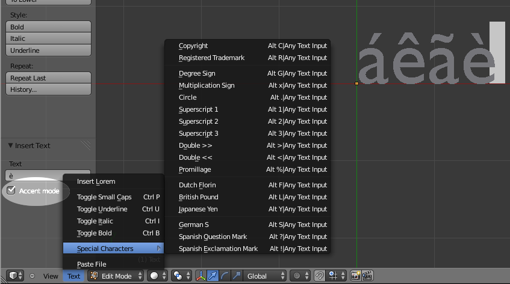
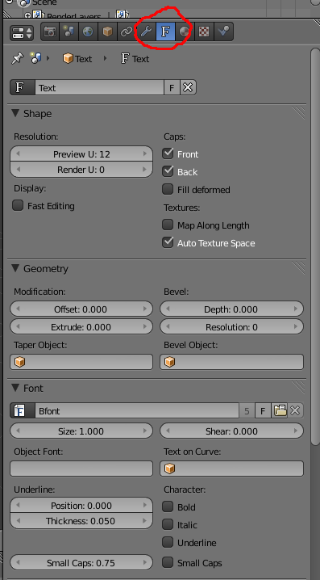
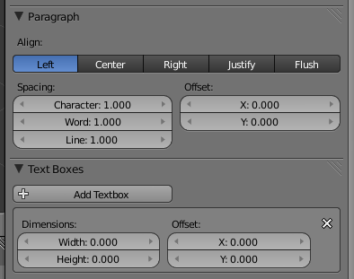
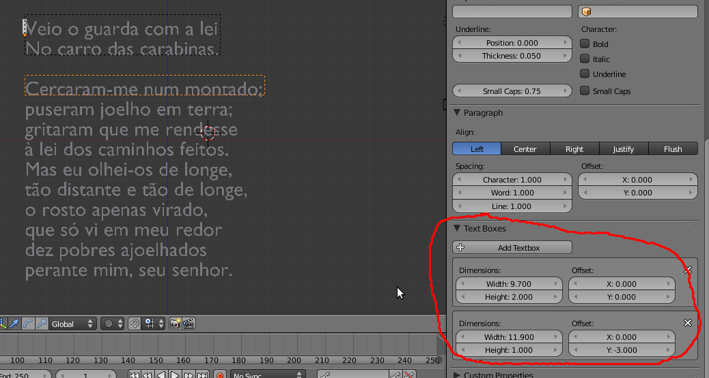
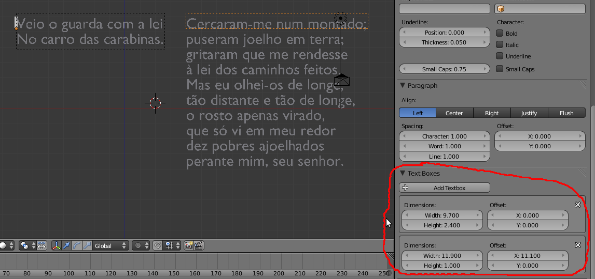
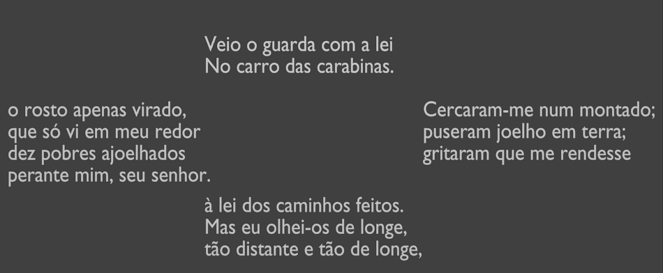
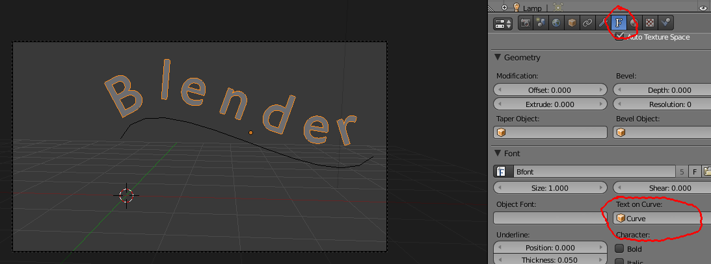

Ao adicionar um objeto de texto no Blender (SHIFT+A) é automaticamente inserido um objeto com o texto “Text”. Para editar o texto, escrever novas palavras ou apagar, passe para Edit Mode e utilize o teclado normalmente.
Em Object Mode, o texto funciona de forma muito similar aos restantes objetos, pode mover, rodar, redimensionar, inserir keyframes, aplicar materiais, etc..
Em Edit Mode, em vez de vértices, arestas e faces, tem um processador de texto, é o modo de escrita. Neste modo, quando estiver a escrever o seu texto, é ativada uma caixa de escrita na barra Tools onde pode utilizar várias opções de atalho comuns (copiar, colar, cortar; Home/End; selecionar blocos de texto com o SHIFT, etc.)
Se desejar editar vértices, arestas e faces dos caracteres tem primeiro de converter o objeto para Curve ou Mesh, selecionando em Object Mode e clicando em ALT+C. Claro está que depois de converter o texto para Curve ou Mesh já não consegue escrever/apagar caracteres em Edit Mode. Depois da conversão, em Edit Mode, tem acesso aos vértices/arestas/faces.
Os caracteres especiais e acentos estão disponíveis via menu Text ou através da ativação do Accent Mode.
Alguns caracteres especiais estão disponíveis através de atalhos. Recomenda-se a consulta da Blender Wiki.
Quando seleciona um objeto de texto no Blender, surge um novo painel com propriedades específicas. Vejamos algumas das possibilidades...
O primeiro menu permite aceder aos diferentes datablocks de texto existentes. Por exemplo, se tiver dois objetos de texto (“texto 1” e “texto 2”), selecionar o “texto 2“ e neste menu escolher o “texto 1”, passa a ter dois objetos de texto iguais e ligados (se modificar no “texto 1”, as modificações aplicam-se aos dois objetos porque partilham o mesmo datablock).
a) Definir a resolução da forma na janela 3D View (Preview) e durante o Render;
b) Preencher a frente e a traseira (só tem as duas se o texto tiver tridimensionalidade), se estiverem desativadas só tem a “outline” dos caracteres;
a) Modificar o Offset da geometria dos caracteres;
b) Definir Extrude (dar volume tridimensional);
c) Definir a resolução e amplitude do Bevel (chanfro).
a) Carregar/apagar tipos de fonte e aceder à lista de fontes existentes;
b) Alterar a dimensão da fonte (Size) e o ângulo/inclinação (Shear);
c) Utilizar uma curva (ver explicação nas páginas seguintes);
d) Ativar e configurar o Bold, Italic, Underline e Small Caps;
e) Configurar o Underline (posição/Position e grossura/Thickness) e Small Caps (escala);
a) Escolher o tipo de alinhamento do parágrafo;
[A diferença entre Justify e Flush: Justify alinha o texto à esquerda e direita da caixa de texto; Flush alinha o texto à esquerda e direita da caixa mas com o mesmo espaçamento entre caracteres]
b) Definir o espaçamento entre caracteres, palavras e linhas;
c) Modificar a posição do texto em X e Y relativamente ao Origin do objeto;
d) Criar e configurar caixas de texto (ver explicação nas páginas seguintes).
As caixas de texto permitem que um objeto de texto possa ser dividido em blocos e estes possam ser organizados no espaço. Sempre que introduz um texto é automaticamente criada uma Text Box e, no exemplo abaixo, criámos uma segunda caixa (botão Add Textbox). O texto utilizado é parte do poema “O Maltês” de Manuel da Fonseca.
As caixas de texto só são visíveis em Edit Mode, estão identificadas com um tracejado. Em cada caixa, pode configurar a dimensão altura/largura e posicionamento X/Y. No exemplo abaixo, a primeira caixa tem apenas uma altura de 2.000, portanto o texto que não cabe é automaticamente associado à segunda caixa. A segunda caixa foi distanciada em Y (-3.000) de modo a criar um espaçamento entre as caixas.
Na segunda imagem, utilizámos as mesmas caixas de texto mas modificámos o posicionamento da segunda para criar duas colunas.
Se aumentássemos a altura da primeira caixa, mais linhas de texto seriam transferidas da segunda coluna para primeira coluna.
Na imagem abaixo, dividimos o texto por 4 caixas de texto. Não é muito legível mas demonstra a utilidade e possibilidades das caixas de texto.
1- Em visão de topo, insira uma linha de texto e uma Curve (por exemplo: uma Bezier ou um Path). Manipule os vértices da Curve a seu gosto.
2- Selecione o objeto de texto e, no respetivo painel de configurações, introduza o nome do objeto Curve na caixa “Text on Curve” (se clicar no ícone, surge um menu com as várias Curves existentes na cena para poder escolher). Experimente as diferentes formas de alinhamento, no caso abaixo utilizámos o Flush.
AVISO: atenção aos eixos locais dos objetos! Se rodar o texto no eixo X (como no exemplo abaixo), não se esqueça de também rodar a Curve ou os eixos não serão coincidentes.
